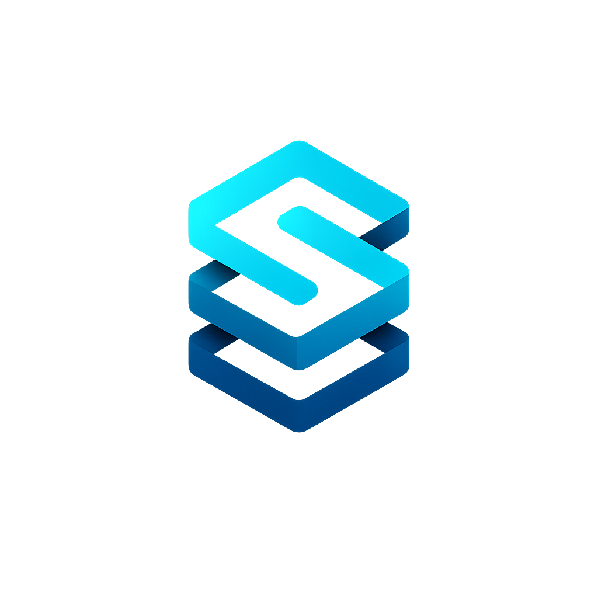
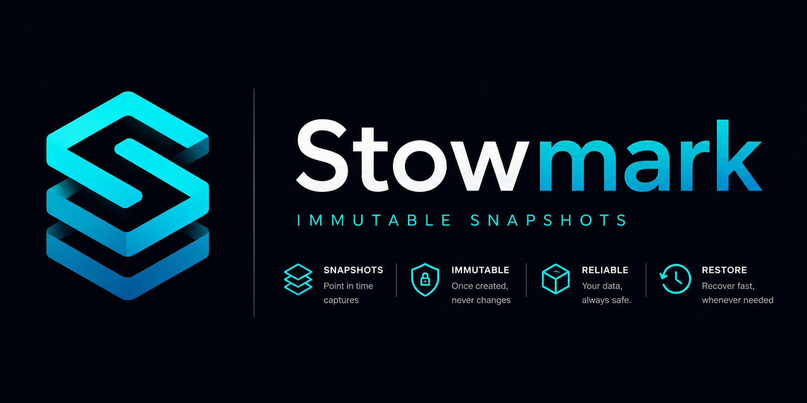
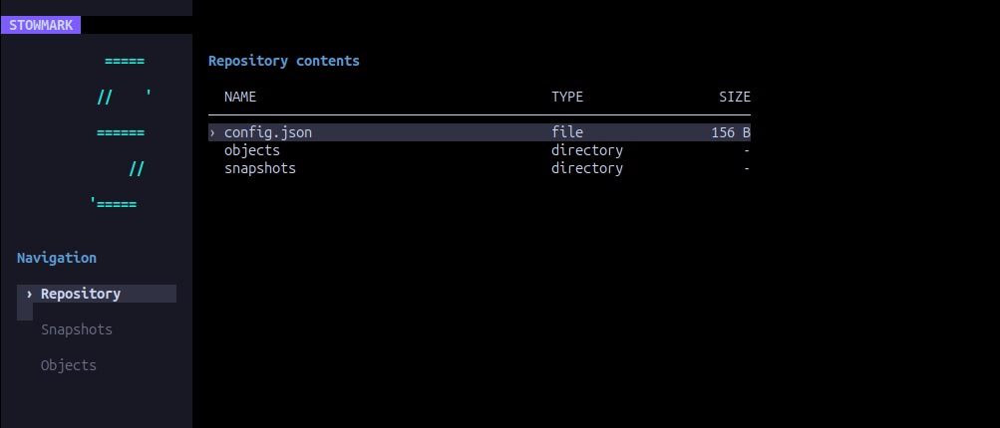

Content addressed
Files are stored by their content hash, so unchanged data is reused.

stowmarkOPEN SOURCE BACKUP TOOL
Stowmark creates content-addressed snapshots of your files without duplicating unchanged data.
Loading latest release…

WHY STOWMARK
Files are stored by their content hash, so unchanged data is reused.
Each snapshot represents a stable point in time that can be restored later.
A small command-line tool designed to be understandable and scriptable.
STOWMARK PROJECTS
Use the focused command-line tool in scripts and automations, or explore your repositories through an interactive terminal interface.
Create, inspect, verify and restore immutable snapshots with a small, scriptable CLI.
stowmark snapshot list --repo ~/backups
Browse snapshots and objects, preview files, verify snapshot integrity and restore data from an interactive TUI.

INSTALL
Files are loaded automatically from the latest GitHub releases.
COMMAND-LINE TOOL
Loading latest release…
INTERACTIVE TERMINAL UI
Loading latest release…
QUICK START
stowmark repository create --source ./documents --repo ~/backups/documents
stowmark snapshot source --repo ~/backups/documents
stowmark snapshot list --repo ~/backups/documents